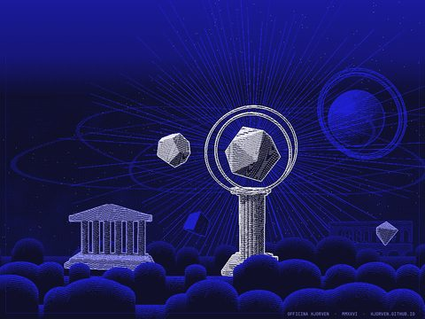
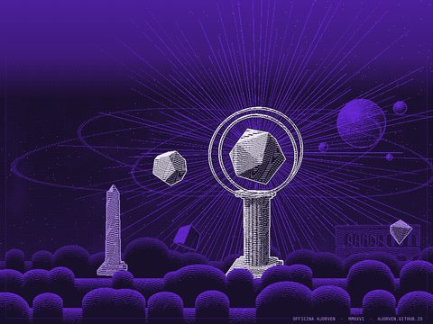
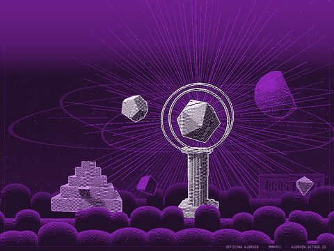
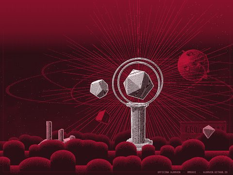
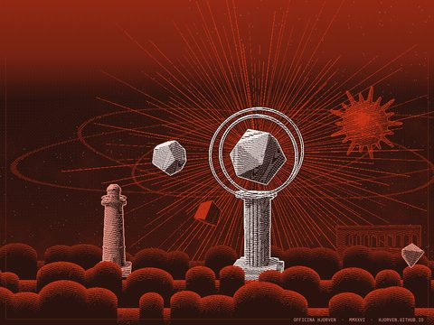
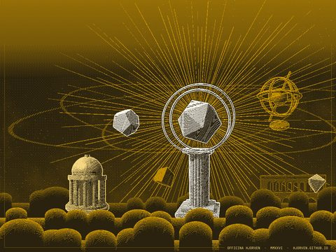
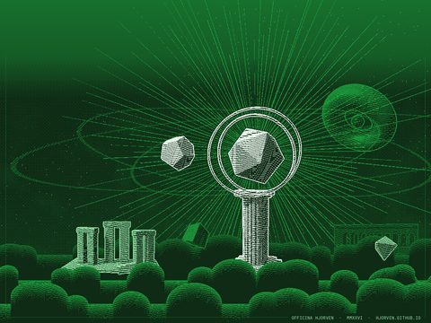

Wallpapers collection
1-bit engravings in the Officina style, free to download and use. Every set lists the device it was made for and its exact resolution. New sets get added here over time.
Officina for iPad






















Set it as the Safari background
- Tap Landscape or Portrait, then hold the image and choose Save to Photos.
- In Safari, open a new tab, tap Edit at the bottom of the start page and turn on Background Image.
- Tap + and pick the wallpaper.